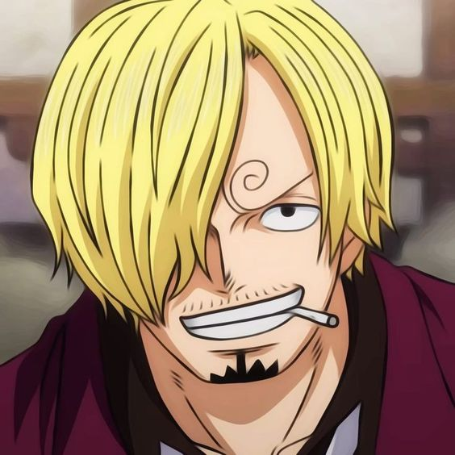
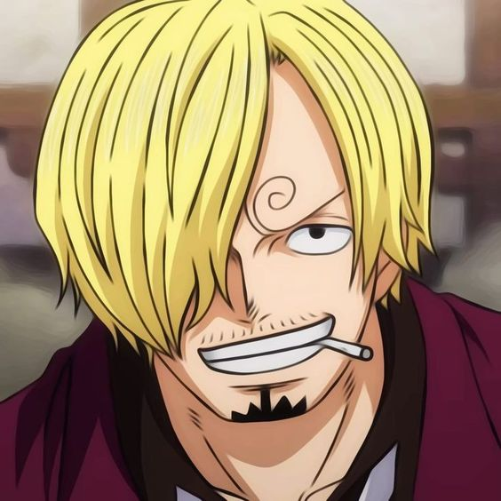
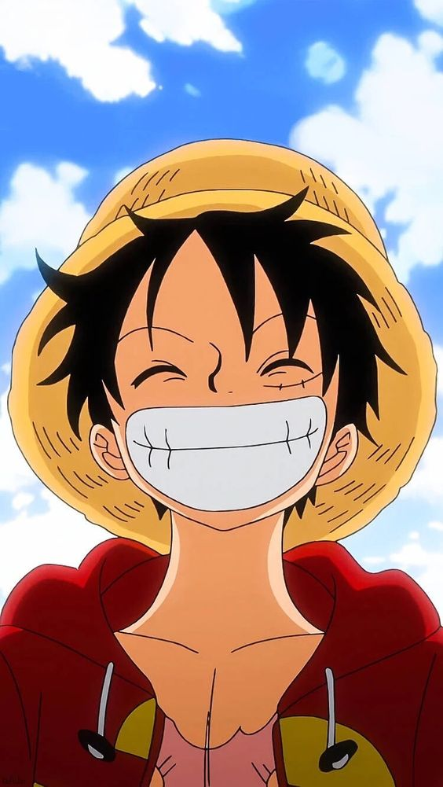
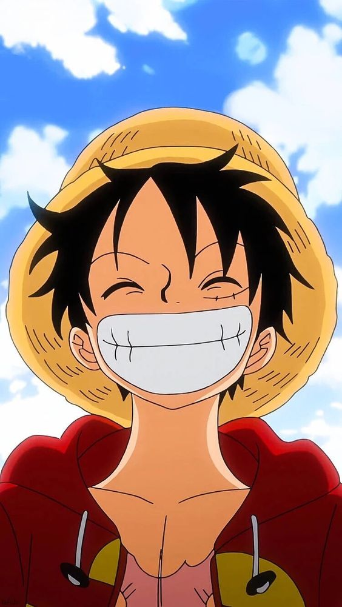

 

About Anime
One Piece is a Japanese manga series written and illustrated by Eiichiro Oda. It has been serialized in Shueisha's shōnen manga magazine Weekly Shōnen Jump since July 1997, with its chapters compiled in 109 tankōbon volumes as of July 2024. The story follows the adventures of Monkey D. Luffy and his crew, the Straw Hat Pirates, where he explores the Grand Line in search of the mythical treasure known as the "One Piece" to become the next King of the Pirates.